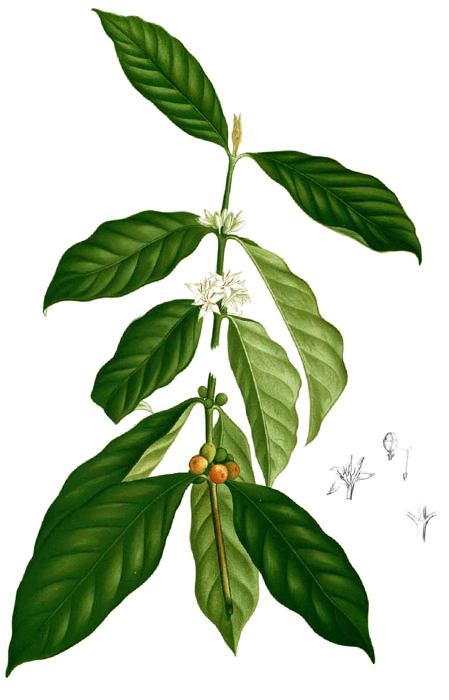
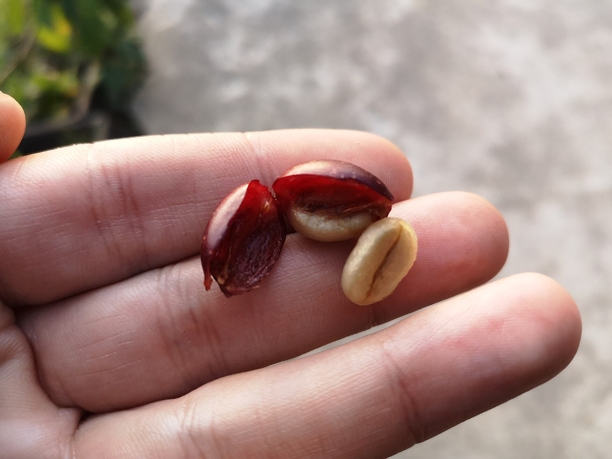
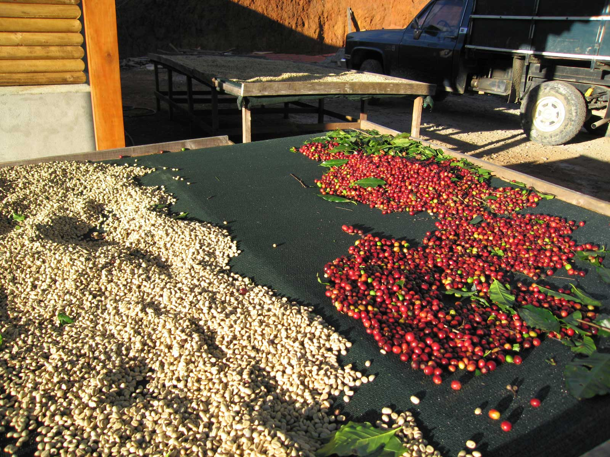

Peak window
Fazenda Santa Inês, Yellow Bourbon
- Process
- Natural, medium-light
- Roasted
- 10 Oct 2026 · SCA 86
- Notes
- Chocolate, caramel, yellow fruits
- Logged
- 9 brews, best 5/5 on the V60
Coffee Nerds is a journal for home brewers. Log the bag, the recipe and how it tasted, then brew your best cup again.
Try a recipePick a bag, pick a recipe, write down how it tasted. Your journal remembers the rest, and tells you how to repeat the good cups.


Roaster, origin, process and roast date, as printed on the bag. Days off roast count themselves.
1:24
Pour gently, up to 500 g
Pick a method and a recipe. Dose, water and temperature are filled in; change what you changed.
TastingSweet and round, long caramel finish. Like a milk-chocolate bar with ripe mango.
Last time with this coffee24 Oct, AeroPress, 3/5 at 20 clicks: “Grind 2 clicks finer.”
Stars, four sensory sliders and one line for next time. The next brew starts from that line.
Built in, from James Hoffmann, Tetsu Kasuya (2016 World Brewers Cup), Stumptown and Wendelien van Bunnik (2019 World AeroPress Champion). Choose one to open it in the brew guide.
Pick a recipe and drag the dose. Every pour is recalculated, and Start counts you through them.
0:00
V60: conical dripper with spiral ribs and a paper filter. Clean, bright cups; sensitive to pour technique.
Water 500 g · 1:16.7 · about 100 °C · medium-fine grind · about 3:30
| Time | Step | Scale at |
|---|---|---|
| 0:00 | Bloom: pour 60 g (twice the dose), then swirl so every ground is wet. | 60 g |
| 0:45 | Pour in circles: a steady spiral pour until the scale reads 300 g. | 300 g |
| 1:15 | Pour gently: a slower, lower pour up to 500 g. | 500 g |
| 1:45 | Stir and swirl: stir once gently with a spoon, then a gentle swirl to flatten the bed. | — |
| 2:00 | Drawdown: hands off. Let it drain; aim to finish around 3:30. | — |
| 3:30 | Done: pull the dripper. Taste it, then rate it while it’s fresh. | — |
Dialing in: a drawdown much past 3:30 means grind coarser; sour or hollow and fast means grind finer. Change one thing per brew and note it in “next time”.
Water 500 g · ratio 1:16.7
Your grinder, to the click.
Comandante, 24 clicks for the best Santa Inês so far.

The best brew of each bag comes first.
| Fazenda Santa Inês | Hoffmann V60 | 5/5 · 24 clicks · 3:32 |
|---|---|---|
| Guji Hambela | Kasuya 4:6 | 4/5 · 28 clicks · 3:28 |
| Huila Pink Bourbon | Stumptown | 2/5 · 1 brew so far |
16
days off roast: the Santa Inês is in its peak window. The Huila, roasted 4 days ago, is still resting.
How it tasted, 26 Oct

3.8
stars on average across 23 brews this October. Most used: the V60.
Duplicate a built-in recipe and it’s yours.
Santa Inês house V60 is Hoffmann’s method at 98 °C, Comandante 24 clicks. Brewed 3 times.
Not yet. Coffee Nerds starts with the V60, the French Press and the AeroPress. Chemex, Kalita Wave, Clever Dripper and moka pot are next; pressure profiles and machine settings are not planned for the first version.
Only you. Each journal is private. There are no followers, no feed and no comments, so a bad cup stays between you and your grinder.
The six built-in recipes stay as their authors published them. Duplicate one and the copy is yours to edit: change the dose, add a pour, rename it.
No. Only the coffee, the recipe and the rating are required. Everything else is optional, so a rushed Monday cup still gets logged.
No app to install. The website is built to work on a phone propped up next to the kettle, timer included.
No. Smart scales and grinders are not connected; you type the numbers in. The guide gives you the scale reading to aim for at every step.
No, and there are no shop links. Log the bag you bought, wherever you bought it.